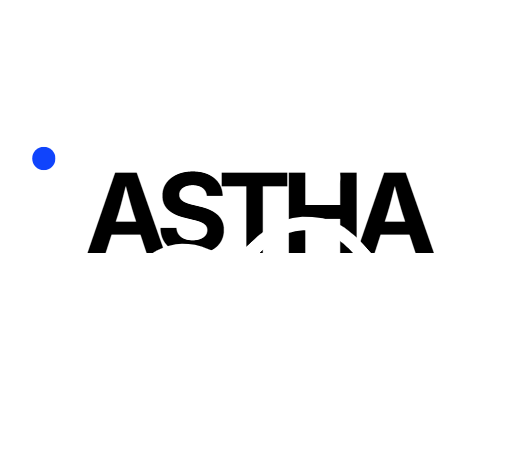

Voltar ao loginRecuperar acesso
Use um código de recuperação salvo ou recebido por e-mail.
Precisa de um código?
Solicite um código para o e-mail da sua conta. Ele vale por 15 minutos.
Entrou com Google ou Microsoft? Recupere o acesso diretamente no seu provedor.